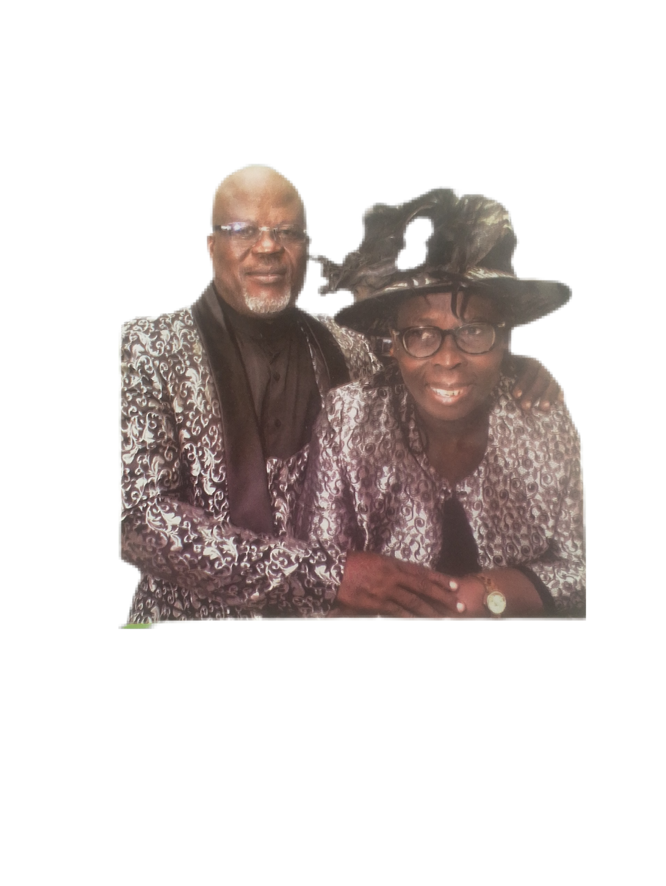

Reverend Adesina
District Overseer
Leads the district, preaching and pastoral oversight. Passionate about discipleship and church planting.
Meet the team serving at Foursquare Gospel Church — Ijoko District Headquarters. Click a profile to read more or contact a team member.
Our district leadership provides spiritual oversight, pastoral care and vision for ministry across the Ijoko Missionary District.

District Overseer
Leads the district, preaching and pastoral oversight. Passionate about discipleship and church planting.
Deputy Pastor
Oversees discipleship and pastoral care across ministries and small groups.
Worship Leader
Leads music and creative arts — coordinates teams for services and events.
Youth Pastor
Discipleship and outreach for teens and young adults, mentoring and youth events.
We are supported by a dedicated team of volunteers across ministries — hospitality, children's ministry, outreach, media and more.